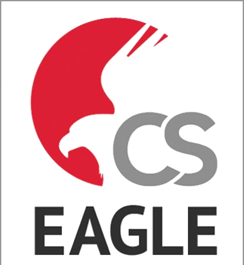

Présentation
Cette mission correspond à une montée en compétence pratique sur la conception électronique. Elle couvre la découverte des méthodes de soudure CMS, des composants et de leurs boîtiers, ainsi que la création d'un poste de soudure avec microscope électronique. J'ai aussi travaillé sur le routage à travers plusieurs exercices progressifs : contraintes dimensionnelles, DRC, ERC, classes de pistes, bus, signaux RF et USB, limitation du nombre de couches et prise en compte des contraintes de fabrication PCB.
Membres
- Travail seul
- Assistance et conseils du maître d'apprentissage
Compétences techniques

EAGLE- Soudure CMS
- Routage PCB
Compétences transversales
- Apprentissage progressif par itérations
- Prise en compte des conseils métier
- Rigueur dans l'application de contraintes de conception
Difficultés et réussites
L'intérêt de cette mission était de repartir plusieurs fois de zéro en ajoutant progressivement des contraintes réelles. Elle m'a permis de mieux comprendre le lien entre schéma, routage, fabrication et assemblage.
Timeline du projet
-
2025/2026
Soudure et composants
- Découverte des boîtiers CMS
- Pratique de soudure sur différentes tailles
- Préparation d'un poste de soudure
-
2025/2026
Routage progressif
- Contraintes mécaniques et électriques
- Netclasses, pistes, vias et espacements
- Contraintes RF, USB et zones interdites